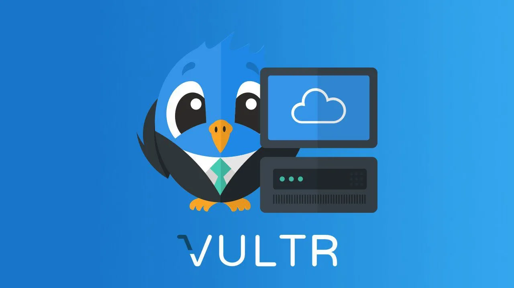

December 29th, 2022

Setting up a website can seem like a daunting task, especially if you're new to the process. However, with the right tools and knowledge, it can be a relatively straightforward process.
In this blog post, we'll cover the steps I took to set up my website, including renting a domain name, choosing a server hosting provider, and configuring the server with Nginx.
First, I used a company called epik to rent my domain name. The process was fairly quick, taking about a quarter of a day before my domain name was registered to me. Its also pretty cool that epik supports cryptocurrency as a payment method.
Next, I chose Vultr as my server hosting provider, opting for a cloud compute Debian general purpose server. I chose the cheapest size that still allowed for IPv4, which cost around $5 per month. If you'd like to get $100 credit on Vultr for any of your server needs, use my referall link here when you sign up!
Once I had my server set up, I linked the server's IPv4 and IPv6 addresses with the DNS records on Epik. This ensured that my website could be accessed using the domain name I had rented.
I decided to use Nginx as my web server, rather than the more traditional Apache. While I was familiar with Apache, I wanted to try something new and found Nginx to be fairly easy to use.
After setting up the website and placing my HTML files in the /var/www/mysite directory, I used Certbot to generate a certificate for my site. This ensures that all communication between my website and its users is encrypted and secure.
Finally, I set up a cronjob to automate the process of renewing my certificates, ensuring that my website remains secure over time.
Overall, the process of setting up a website may seem intimidating at first, but with the right tools and knowledge, it can be a relatively straightforward process. Whether you're a seasoned pro or a beginner, following these steps can help you get your website up and running in no time.